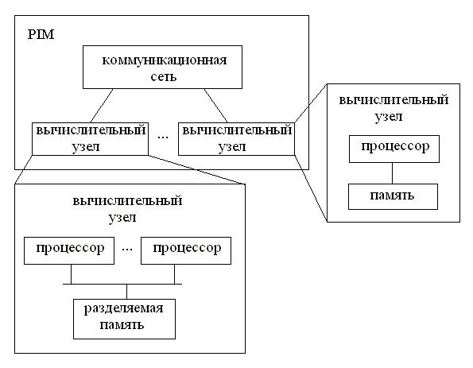
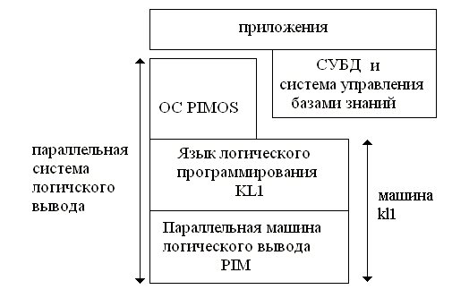
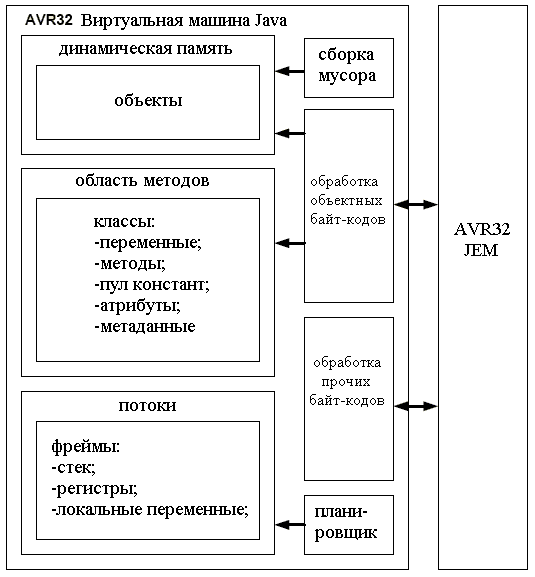
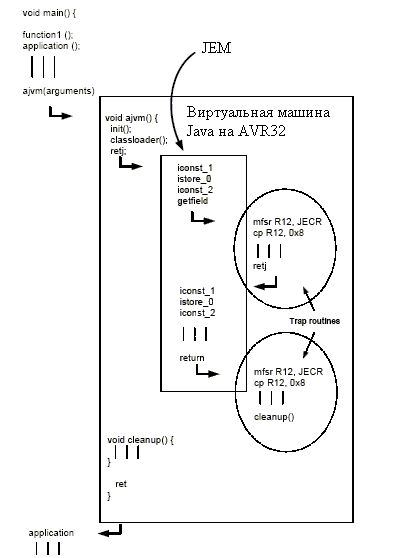

Архитектура ВС вообще и микропроцессора, в частности, оказывает огромное влияние на разработку операционных систем, языков программирования низкого и среднего уровня. Однако, существует и обратная связь. Архитектура большинства современных микропроцессоров разрабатывалась с учетом требований операционных систем и языковых средств высокого уровня, которые исполняются на этих микропроцессорах. В RISC микропроцессорах такое влияние на архитектуру проявилось, например, в организации регистровой памяти. В CISC микропроцессоре Intel 80386 [1-3] требования разработчиков операционных систем отразились на реализации аппаратной поддержки страничной виртуальной памяти. Для поддержки языковых средств высокого уровня было добавлено несколько команд [1], в частности команды enter (создание фрейма в стеке для параметров процедуры языка высокого уровня), leave (удаление фрейма в стеке), bound (проверка на выход за границы массива). Некоторые архитектуры пошли дальше введения отдельных команд для поддержки языков высокого уровня, они были разработаны специально для исполнения программ, написанных с использованием соответствующих языковых средств.
К таким архитектурам можно, например, отнести:
1) Lisp машины;
2) компьютеры пятого поколения;
3) ВС с аппаратной поддержкой Java;
4) микропроцессоры для выполнения Forth программ (UltraTechnology F21, Atmel MARC4 и другие);
5) ВС с аппаратной поддержкой языка Smalltalk.
Язык LISP [4, 5] - старейший, не считая FORTRAN, язык. Создан в 1957 году. LISP - язык функционального программирования [6] обработки списков (List Processing). Широко применяется для построения систем искусственного интеллекта, в частности для символьной обработки выражений, обработки текстов на естественных языках, построения экспертных систем и систем управления базами знаний. Программная реализация языка основана на интерпретаторе, работающем с программами, переведенными во внутренне представление. Существует много реализаций LISP: Common Lisp, muLISP, CMU LISP, InterLISP, MacLISP, ARC.
Фирмами Lisp Machines, Thinking Machines, Xerox, Fujitsu, Racal-Norsk был создан ряд ВС, ориентированных на исполнение LISP программ. В Лаборатории Искусственного Интеллекта Массачусетского Технологического Института (MIT AI Lab) с 1973 по 1975 годы Ричардом Гринблаттом и Томасом Найтом была построена ВС Lisp Machine [7, 8]. В 80-х компанией Lisp Machine, Inc было произведено около 7000 таких ВС. Стоимость ВС составляла 80 тыс. долларов.
Lisp Machine служит для эффективного выполнения LISP программ. В ней реализована виртуальная память размером 16 Мб. Она имеет компактный, ориентированный на LISP набор машинных команд. Процессор ВС имеет типичную микропрограммную архитектуру с 32-битными словами, размер шины адреса - 24 бита (отсюда и размер виртуальной памяти - 16Мб). Размер машинных команд (макрокоманд) - 16 бит. В одно машинное слово помещаются две команды. Достаточно большой размер памяти (по меркам 70-х годов) для микрокоманд (16К 48-битных слов) необходим для команд поддержки LISP. В ВС нет кэша, но аппаратно реализована эффективная передача данных между памятью и стеком. Именно такой вид пересылок данных типичен при исполнении LISP программ. Память ВС в обычной конфигурации - 64К слов, но может быть увеличена до 1М слов. Для быстрой работы со стеком его верхняя часть располагается в быстродействующей памяти размером 1К слов. Размер диска - 16М слов. Машина занимала одну стойку для 19-дюймовых плат.
В Lisp Machine используется только два языка: микрокод процессора и LISP. В микрокоде реализованы базовые операции LISP, поддержка страничной виртуальной памяти и управление динамической памятью. Для функций LISP, реализованных в микрокоде, компилятор генерирует соответствующий код макрокоманды, для всех остальных - вызов подпрограмм. На уровне исходного текста LISP программы нет отличий в вызове функций реализованных на микрокоде и на LISP. Так как LISP - единственный язык на макроуровне, то все системные функции реализованы на нем. В отличие от типичных реализаций LISP, в Lisp Machine допускается возврат из функций более одного результата. Для построения эффективной реализации критичных по времени исполнения функций, компилятор позволяет генерировать для LISP функций микрокод, тем самым превращая одну LISP функцию в одну макрокоманду. Однако, так как микропрограммная память ограничена, только небольшое количество таких функций может быть загружено одновременно.
В процессоре на уровне макрокоманд имеются три режима адресации:
1) неявная (обращение к вершине стека);
2) по источнику (обращение к параметру функции или к локальной переменной);
3) по приемнику (для сохранения результата выполнения макрокоманды)
Макрокоманды можно разбить на пять групп:
1) команды передачи данных (передача аргументов функциям, возврат результатов, формирование и работа со списками);
2) команды вызова (вызов функций, возврат из функций);
3) команды поддержки базовых типов (в т.ч. арифметические, битовые, операции сравнения);
4) команды ветвления (безусловное ветвление, условное ветвление);
5) прочие (ввод/вывод, макрокоманды функций, для которых компилятор сгенерировал микрокод, и прочие).
Операции ввода/вывода для внешних устройств реализованы как в микрокоде, так и на LISP. В микрокоде есть команды чтения данных с шины (%UNIBUS-READ), записи данных на шину (%UNIBUS-WRITE) и записи символов в видеопамять. Все остальные операции написаны как LISP функции.
Другим известным примером ВС, ориентиванных на языковую среду, являются компьютеры пятого поколения. Проект по созданию ВС пятого поколения [9, 10] проводился по инициативе Министерства Внутренней Торговли и Промышленности Японии с 1982 по 1993 годы. Целью проекта было построение массово параллельной системы с возможностью обработки знаний, распределенной обработки данных, работы с большими базами данных. Основной операцией такой ВС была операция логического вывода. Производительность системы оценивалась в LIPS (число логических выводов в секунду). Планировалось построить ВС с производительностью от 100MLIPS до 1GLIPS.
Сначала была построена последовательная ВС с системой логического программирования [11] с языком KL0, являющимся расширением языка Prolog [12-18]. Далее была создана MIMD параллельная ВС для логического вывода (PIM) с языком KL1. Она имела от 256 до 1024 процессоров. В PIM была реализована аппаратная поддержка для среды логического программирования. Набор ее команд ориентирован на язык KL1. На верхнем уровне PIM (см. рис. 1) - MPP система с вычислительными узлами, соединенными коммуникационной сетью (в PIM/p она имеет топологию шестимерного гиперкуба). Каждый вычислительный узел может быть однопроцессорной ВС или параллельной ВС с SMP архитектурой. В PIM/p вычислительный узел - SMP система, имеющая восемь процессоров. Один из процессоров производит операции ввода/вывода на диск.

Рис. 1. Архитектура ВС PIM.

Рис. 2. Основные уровни программного и аппаратного обеспечения ВС PIM/p.
Программная часть состоит из языка KL1, ОС PIMOS, СУБД и прикладных программ (см. рис 2). Как и KL0, KL1 основан на языке Prolog. Отличие KL1 от KL0 заключается в том, что он ориентирован на параллельное исполнение программ. Для исполнения программа на KL1 переводится в бинарное представление. Исполнение производится на виртуальной машине, которая частично реализована в аппаратуре PIM, частично - в системном программном обеспечении низкого уровня. ОС PIMOS, система управления базами данных (СУБД) и приложения реализованы на языке KL1. На базе KL1 и PIMOS построен ряд приложений, в частности:
1) система разработки электрических схем;
2) система компоновки схем на СБИС;
3) система синтеза схем на основе высокоуровневой спецификации на Паскаль-подобном языке;
4) экспертная система для разработки логических схем;
5) параллельная система моделирования логических схем на СБИС;
6) программа анализа протеиновых последовательностей;
7) система доказательства теорем;
8) параллельная СУБД для систем управления знаниями;
9) система логического вывода для юридических знаний;
10) система поиска общих шаблонов в протеиновой базе данных;
11) система для разработки параллельных программ;
12) параллельная система логического программирования в ограничениях;
13) система генерации текстов на естественных языках;
14) параллельная система обработки текстов на естественных языках.
Хотя в рамках проекта по созданию ВС пятого поколеня не были достигнуты поставленные цели, некоторые из его идей позже воплотились в системах обработки знаний в виде программ, работающих на обычных ВС четвертого поколения.
Язык JAVA [19, 20] создан в фирме Sun Microsystems в первой половине 90-х годов. Это объектно-ориентированный язык [21], программы на котором обладают переносимостью как в исходном, так и в исполняемом виде.
Среда JAVA имеет два уровня представления программ. Первый - текстовый, ориентированный на разработчика и читателя программ. На нем записываются исходные тексты программ. Из этого представления в результате работы компилятора получается бинарное представление. Оно предназначено для быстрого выполнения машиной - виртуальной машиной JAVA (JVM) [22] или микропроцессором, аппаратно реализующим исполнение этого представления. Как и синтаксис текстового представления, формат бинарного предствления стандартизован. Все реализации виртуальной машины JAVA работают с одним и тем же бинарным представлением [22]. Это позволяет запускать программы JAVA на любой ВС, где есть виртуальная машина JAVA. Программы в бинарном представлении состоят из команд, называемых байт-кодами. Длина байт-кодов варьируется от одного до нескольких байт. Кажый байт-код содержит код операции. Также он может содержать несколько аргументов. Их назначение и число зависят от кода операции.
Кроме многочисленных программных реализаций JVM, которые были реализованы для всех распространенных архитектур, начиная с середины 90-х годов, был создан ряд систем с аппаратной поддержкой JVM.
В качестве примера микропроцессора, ориентированного на исполнение JAVA байт-кода, рассмотрим семейство AVR32[23]. Оно выпущено фирмой Atmel в 2006 году. Часть процессоров этого семейства имеет встроенную аппаратную поддержку JVM[24]. В таких процессорах наряду с обычным для AVR режимом работы с исполнением RISC команд, есть режим исполнения JAVA байт-кода. Этот режим реализован в модуле расширения JAVA (JEM - Java Extension Module). Модуль расширения JAVA содержит подмодуль декодирования команд JAVA байт-кода. Микропроцессор позволяет переключаться между режимами RISC и JAVA и поддерживает исполнение в режиме разделения времени нескольких процессов в любом из этих режимов. Программы JAVA могут исполняться на системном или прикладном уровне безопасности, генерировать и обрабатывать прерывания. Исполнение байт-кода реализуется двумя способами. Большинство байт-кодов реализуется аппаратно. Некоторые байт-коды, например, отвечающие за создание и манипулирование объектами, реализуются подпрограммами RISC команд. В таком случае при выполнении определенного байт-кода возникает прерывание, и запускается соответствующая ему подпрограмма. Загрузка JAVA классов происходит с помощью программной части реализации виртуальной машины JAVA. На рис. 3 показана ее структура.

Рис 3. Виртуальная машина Java и модуль расширения Java на AVR32.
На рис. 4 показан пример исполнения программы. При старте процессор работает в режиме RISC. Для запуска Java программы происходит обращение к виртуальной машине Java. Сначала она запускает процедуру инициализации (init), затем загружает Java класс и инициализирует регистры микропроцессора, которые требуются для исполнения программы. Далее выполняется инструкция RETJ, которая переводит микропроцессор в режим Java. В процессе исполнения Java программы иногда встречаются байт-коды, не реализованные аппаратно. Декодер команд распознает их, переведет процессор в режим RISC и передаст управление подпрограмме исполнения соответствующего байт-кода. Исполнение таких подпрограмм завершается командой RETJ. Микропроцессор вернется в режим Java и начнет исполнять очередной байт-код. После завершения исполнения Java программы процессор снова переходит в режим RISC, виртуальная машина выполняет код деинициализации и завершается.

Рис. 4. Исполнение программ Java на AVR32.
[1] Pappas C., Murray W.H. - 80386 microprocessor handbook. - Berkley, Ca. - Osborne McGraw-Hill. - 1988
[2] Паппас. К., Марри У. - Микропроцессор 80386. - М. - Радио и Связь. - 1993
[3] Смит Б.Э., Джонсон М.Т. - Архитектура и программирование микропроцессора INTEL 80386. - М. - Конкорд. - 1992
[4] Touretzky D. - Common Lisp: A gentle introduction to symbolic computation. - The Benjamin/Cummings publishing company. - 1990
[5] Хювенен Э., Сеппянен Й. - Мир Лиспа. - т. 1. - Введение в язык Лисп и функциональное программирование. - М. - Мир. - 1990
[6] Филд. А., Харрисон П. - Фунциональное программирование. - М. - Мир. - 1993
[7] Lisp machine. - http://en.wikipedia.org/wiki/Lisp_machine
[8] Lisp Machine Progress Report. - MIT. - 1977 (http://dspace.mit.edu/bitstream/1721.1/5751/2/AIM-444.pdf)
[9] Fifth generation computer. - http://en.wikipedia.org/wiki/Fifth_generation_computer_systems_project
[10] Overview of The Fifth Generation Computer Systems Project. - http://www.icot.or.jp/ARCHIVE/Museum/FGCS92Demo/E/PDF/001-007.pdf
[11] Чери С., Готлоб Г., Танка Л. - Логическое программирование и базы данных. - М. - Мир. - 1992
[12] Клоксин У., Меллиш К. - Программирования на языке Пролог. - М. - Мир. - 1987
[13] Малпас Дж. - Реляционный язык Пролог и его применение. - М. - Наука. - 1990
[14] Стеглинг Л., Шапиро Э. - Искусство программирования на языке Пролог. - М. - Мир. - 1990
[15] Братко И. - Программирование на языке Пролог для искусственного интеллекта. - М. - Мир. - 1990
[16] Доорс Дж., Рейблейн А.Р., Вадера С. - Пролог - язык программирования будущего. - М. - Финансы и Статистика. - 1990
[17] Стобо Дж. - Язык программирования Пролог. - М. - Радио и Связь. - 1993
[18] Макаллистер Дж. - Искусственный интеллект и Пролог на микроЭВМ. - М. - Машиностроение. - 1990
[19] Бартлетт Н., Лесли А., Симкин С. - Программирование на Java. Путеводитель. - Киев. - ДиаСофт. - 1996
[20] Морган. М. - Java 2. Руководство разработчика. - М. - Вильямс. - 2000
[21] Буч Г. - Объектно-Ориентированное Проектирование с примерами применения. - М. - Диалектика. - 1992
[22] Lindholm T., Yellin F. - The Java Virtual Machine Specification. Second Edition. - http://java.sun.com/docs/books/jvms/second_edition/html/VMSpecTOC.doc.html
[23] AVR32 Architecture Document. - http://www.atmel.com/dyn/resources/prod_documents/doc32000.pdf
[24] AVR 32 bit Microcontroller Java Technical Reference. - http://www.atmel.com/dyn/resources/prod_documents/doc32049.pdf